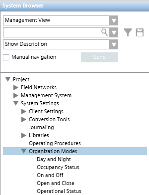
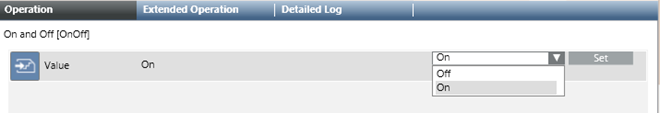

Overview of Organization Modes
Organization modes are system objects that can reflect the operational status or schedule of the building control site (for example, whether the facility is open or closed, its occupancy status, whether it is day or night, and so on).
- Organization modes are used as inputs that combined with other conditions can trigger a variety of automated functions. For example, to trigger reactions, automated handling of alarms, operating procedures, or graphic animations.
- Organization modes are typically set by automated logic (for example, as a result of a schedule or reaction). But they can also be toggled manually by the operator.
- The system comes with some predefined organization modes, but you can also configure additional ones.
In Engineering mode, you can set up other automated functions (reactions, operating procedures, automated alarm handling, and so forth) to use organization modes. You can also configure custom organization modes.
In Operating mode, you can view existing organization modes, manually toggle their state, or create schedules to automatically set them.
Organization modes are accessed in Management View of System Browser, under Project > System Settings > Organization Modes.

The list under Organization Modes includes the predefined Organization modes (Day and Night, Occupancy Status, On and Off, Open and Close, Operational Status) as well as any others that have been configured.
The organization modes listed here will display in the drop-down list that you see when you specify time and organization mode conditions.
Values of an Organization Mode
Each organization mode has a set of associated values. For example, the predefined Occupancy Status organization mode has two possible values: Occupied or Unoccupied. The possible values that an organization mode can have are determined by its text group.
You can view the current value of an organization mode in the Operation or Extended Operation tab, and also manually set its value from there.
When you select an organization mode object in System Browser (for example, On and Off), you can view the current value of an organization mode in the Operation or Extended Operation tab, and also manually set its value from there.

- To manually toggle the organization mode, you can select a different value from the drop-down list (for example, Off) and click Set.
However, organization modes are most commonly set by automated logic.
Organization Modes and Automation Logic
Use Organization Modes to Trigger Automated Functions
You can use organization modes as additional inputs that, combined with other conditions, can trigger a variety of automated functions. For details, see Time and Organization Mode Conditions.
Examples of Organization Modes Applications | |
Trigger a reaction | For example, you might want a certain automated reaction to be triggered only if the site is Open. |
Trigger an operating procedure | For example, you might want a certain operating procedure (see Operating Procedures for Assisted Treatment) with evacuation instructions to start only when specific alarms occur and the building control site is Occupied. |
Trigger automated alarm handling | For example, you might want to automatically start alarm handling (see Event Handling Rules) only when specific alarms occur and the building control site is Unoccupied. |
Trigger graphic animations | See Graphics Editor. |
Set Organization Modes with Automated Logic
The following step-by-step procedures provide examples of how to set the value of an organization mode with automated logic:
- [Example] Automatically Setting an Organization Mode as the Output of a Schedule
- [Example] Automatically Setting an Organization Mode as the Output of a Reaction